Tailgate
Print
Operation Code: 10.11.14-02
Removal
- Open tailgate.
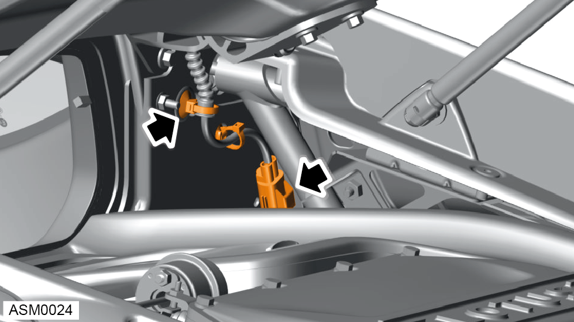
- Disconnect tailgate harness and remove harness clips (x2) from bulkhead.
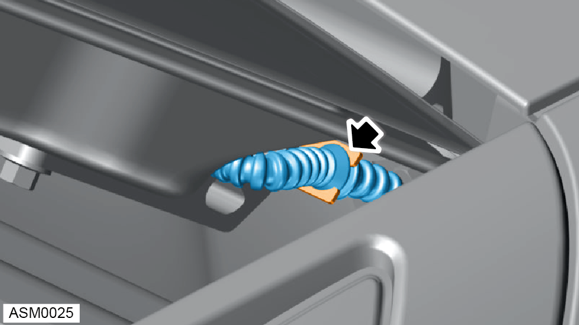
- Disengage tailgate harness from right side tailgate hinge bracket.
- With assistance support weight of tailgate.
- Unclip left and right side tailgate struts from tailgate.
NOTE: Only disconnect tailgate strut from tailgate panel. Do not fully remove strut from vehicle.
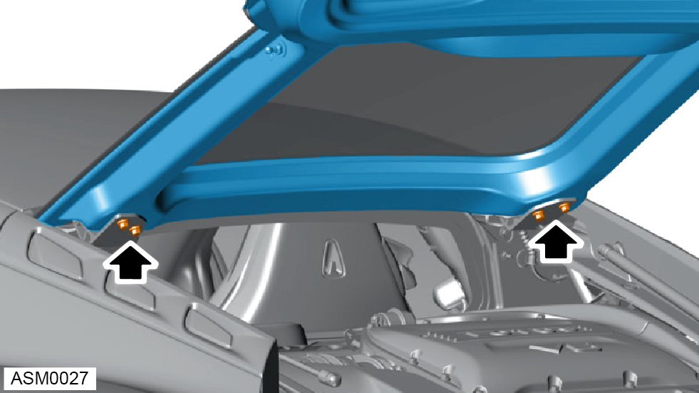
- Remove M8x25 bolts (x4) securing tailgate to tailgate hinges. Torque 24 Nm.
NOTE: To aid installation mark position of tailgate to tailgate hinges.
- Remove tailgate from vehicle.
NOTE: Place tailgate on a suitable surface to prevent damage.
Do not carry out further disassembly if component is removed for access only.
- Remove M8x25 bolts and washers (x2) securing tailgate striker to tailgate. Torque 25 Nm.
NOTE: To aid installation mark position of tailgate striker to tailgate panel.
NOTE: Always record quantity and fitted position of shims and washers.
- Remove tailgate striker.
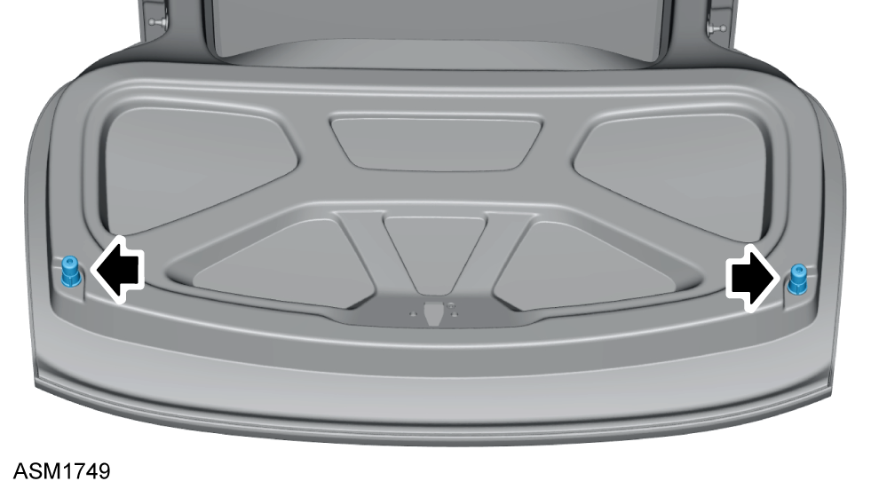
- Remove bump stops (x2).
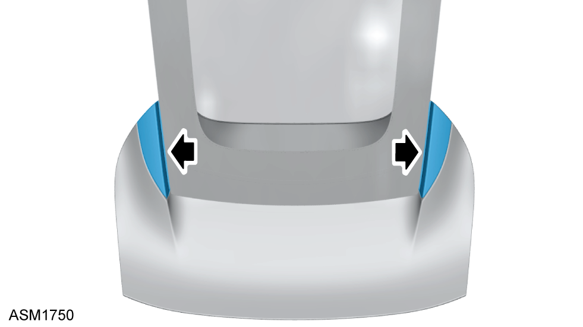
- Release adhesive securing tailgate glass trims (x2) to tailgate.
NOTE: The tailgate glass trim is retained using adhesive strips.
- Remove tailgate glass trims (x2).
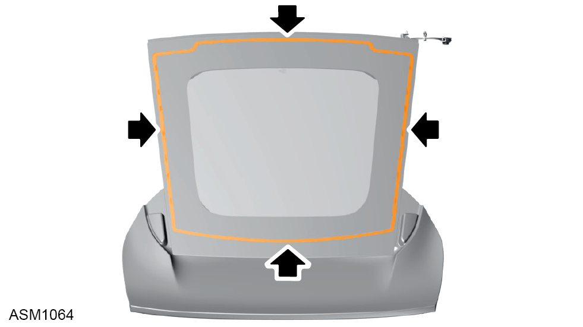
- Using suitable equipment, cut adhesive securing tailgate glass to tailgate.
- Lift tailgate glass to access heated screen connectors.
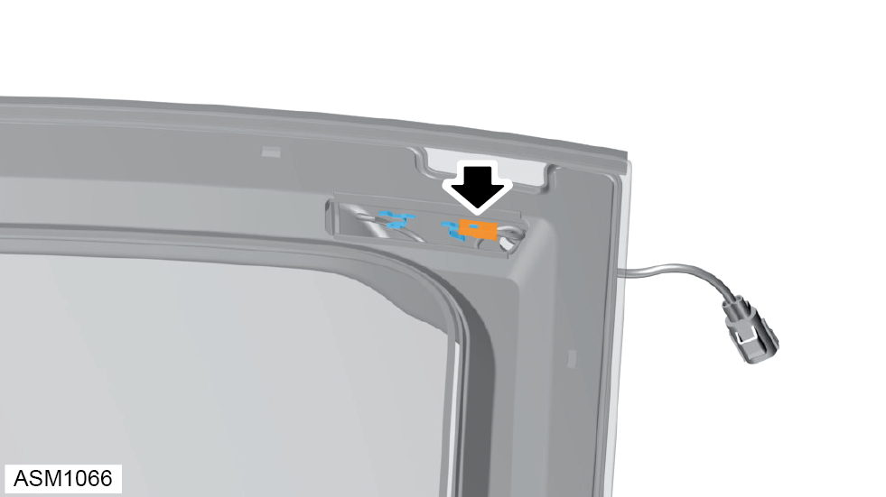
- Disconnect tailgate heated screen from tailgate.
NOTE: Reconnect heated screen connectors before bonding glass to tailgate.
- Using assistance remove tailgate glass.
NOTE: If glass is to be reused place on suitable surface to prevent damage.
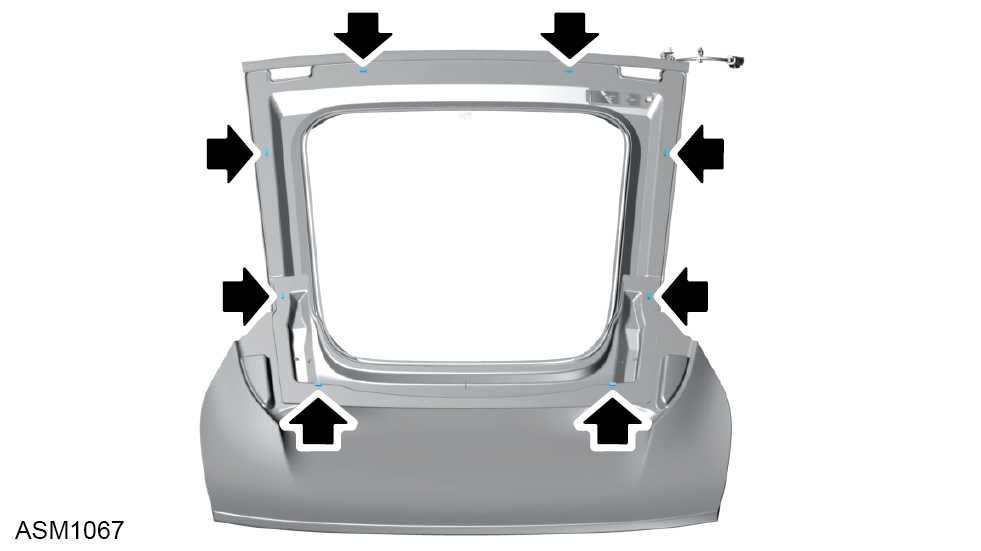
- Remove rubber spacers (x8) from tailgate.
NOTE: Always record quantity and fitted position of spacers.
Installation
- Installation is the reverse of removal procedure except for the following:
NOTE: Make sure tailgate is aligned correctly during installation. Use position marked during removal procedure.
NOTE: Only fully tighten bolts when you have confirmed the panel alignment is correct.
- Inspect heated screen trace lines for damage.
- Remove old adhesive from tailgate.
- Clean tailgate mating surface using betaclean 3300.
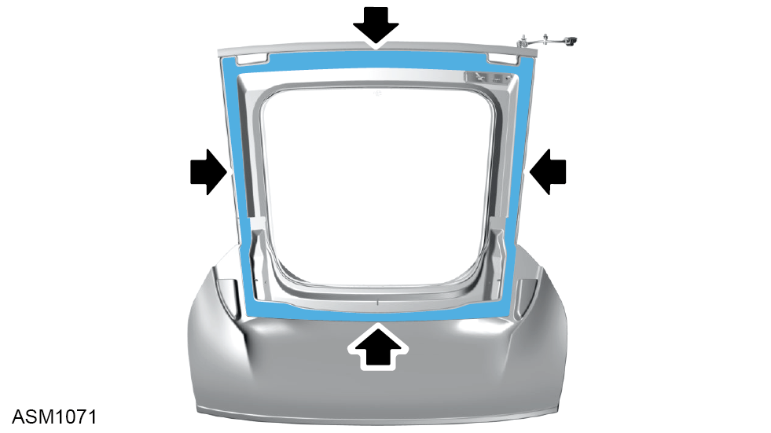
- Apply betaprime 5404 primer to tailgate aperture.
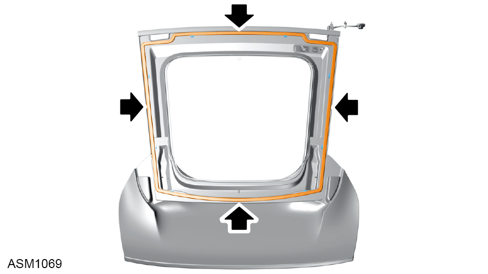
- Apply betaseal 1580 to tailgate aperture.
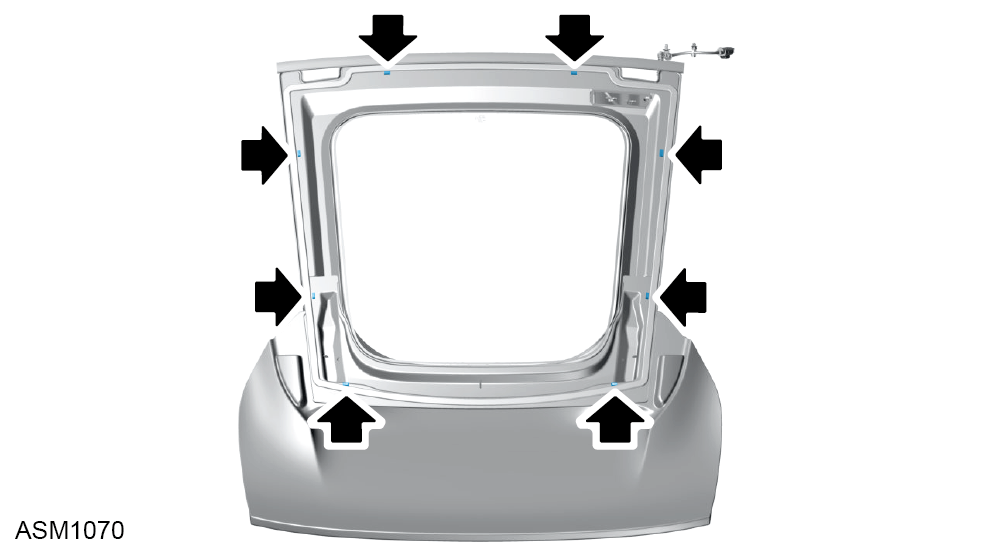
- Install rubber spacers (x8) into adhesive.
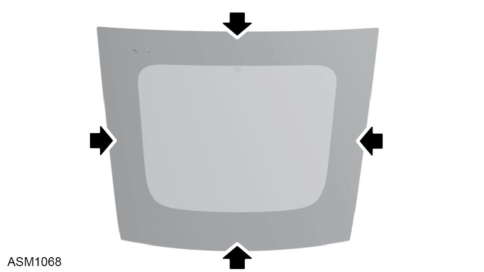
- Clean area of glass around tailgate glass heating element using betaclean 3300.
- Using assistance install tailgate glass to tailgate.
NOTE: Reconnect heated screen connectors before bonding glass to tailgate.
- Check gap and flush tolerances - see Alignment Specifications for Body Panels and Closures section.